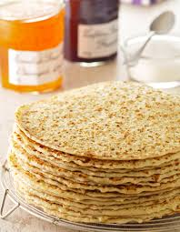

Fine French Dining
Crêpes traditionnelles

Ingredients
375 ml (1 1/2cups) of flour
45 ml (3tbsp) of sugar
1 pinch of salt
2 large eggs
500 ml (2 cups) of milk
30 ml (2tbsp) of vegetable oil
5 ml (1tsp) of grinded nutmeg
Preparation
- In a large bowl, mix flour, sugar, and salt. Add eggs and milk, then whip the batter.
- Add vegetable oil and nutmeg and mix the batter.
- Onto a griddle, scoop the batter using about 2 tablespoons per crepe. Tip and rotate the pan to spread the batter as thinly as possible. Brown on both sides and serve hot.
How many times would you like to multiply this recipe?
The rest of this page will soon come. Expect more details. See you.